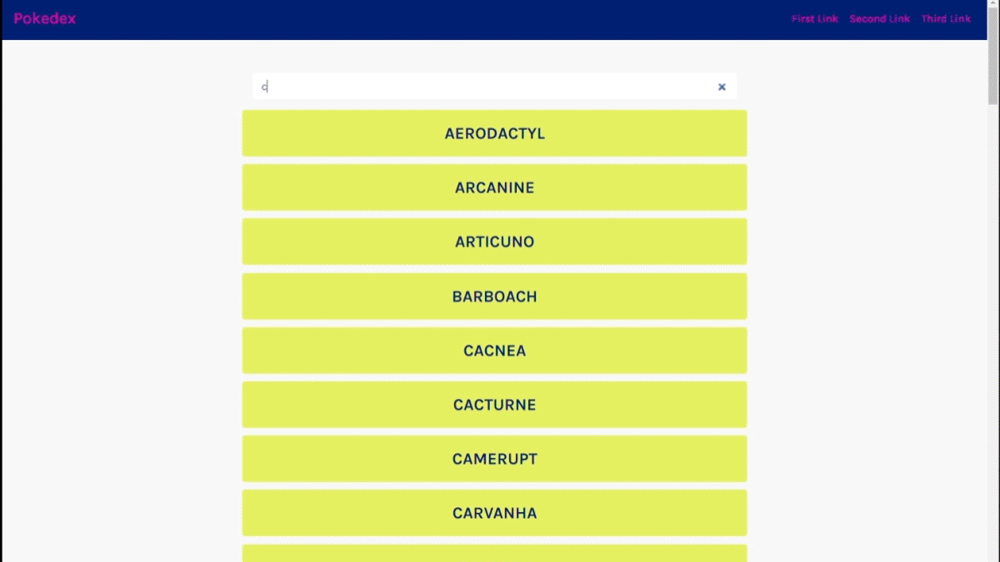
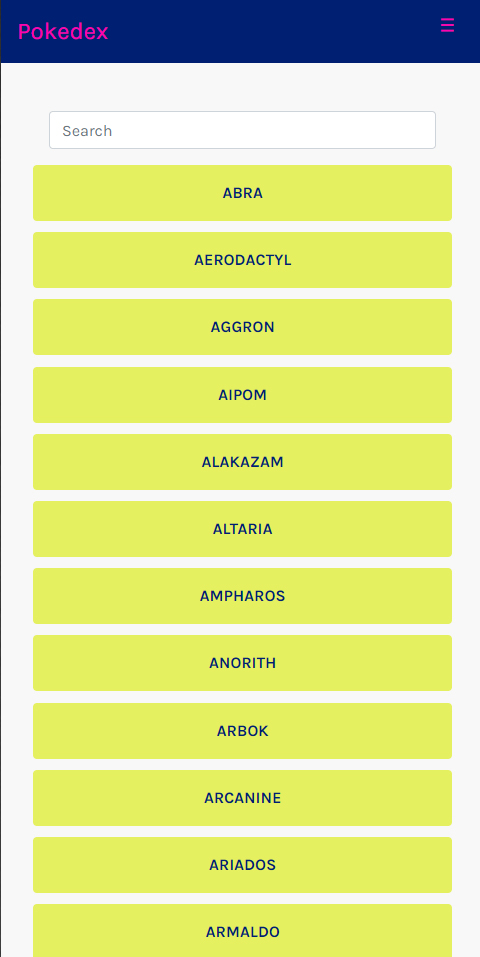
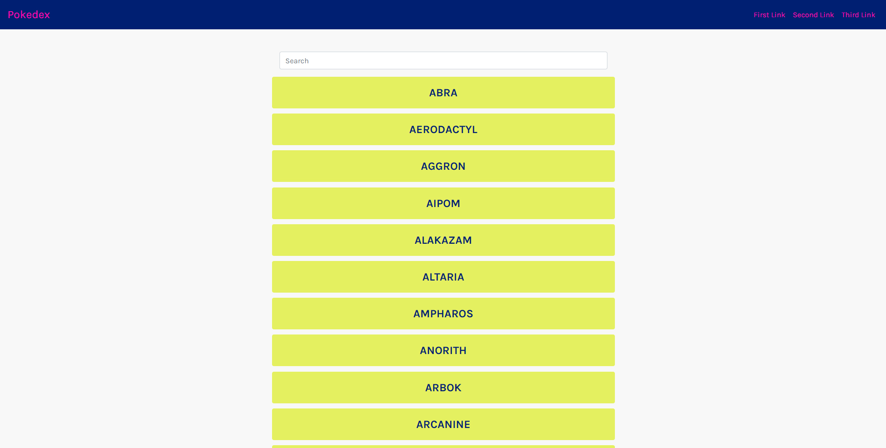
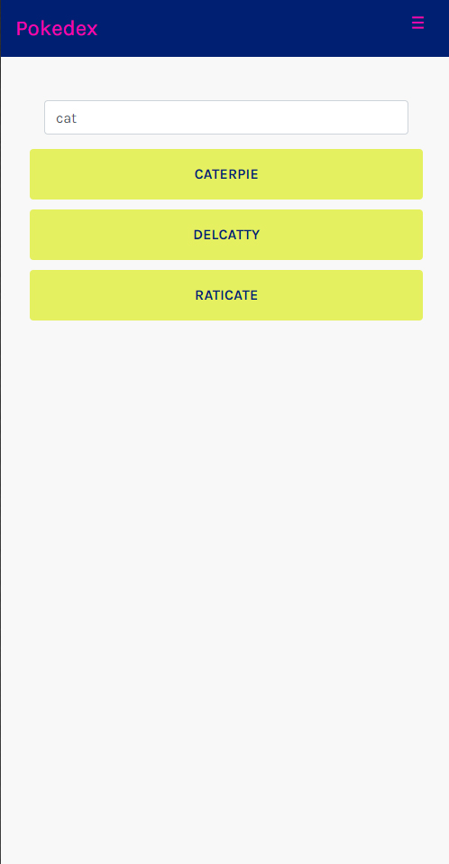
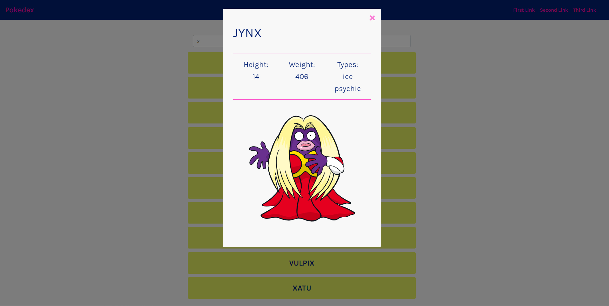
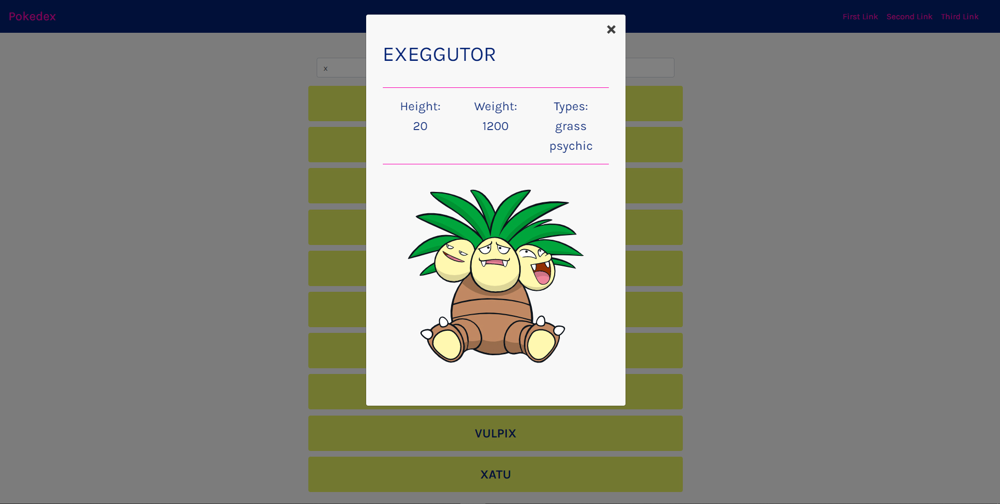

Pokemon App
Vanilla JavaScript | Bootstrap
Über das Projekt
Lern-Projekt von CareerFoundry (2021)
Eine App, die Daten von einer öffentlich zugänglichen, externen API lädt und eine Liste von Datenelementen anzeigt.
Anschließend Anzeigen von Details in einem Modal beim Klicken.

Pokemon App in Benutzung
Ziel
Ziel des Projekts war die Entwicklung einer Webanwendung unter Verwendung von reinem JavaScript und Bootstrap.
Die zu lösende Aufgabe bestand darin, eine App zu erstellen, die Daten von einer externen API abruft,
die Datenobjekte in einer Liste darstellt sowie Details und Bilder in einem Modal anzeigt.

Screenshot der fertigen App (main view mit movie list)
Kontext
Die Pokémon-Anwendung entstand im Rahmen des Webentwicklungskurses bei CareerFoundry,
um Fähigkeiten in JavaScript zu vertiefen, eine externe API zu nutzen und Bootstrap
für die Benutzeroberfläche zu implementieren.
Die Projektaufgabe beschrieb die Funktionen und Anforderungen präzise, und die Übungen waren so strukturiert,
dass sie diesen Vorgaben folgten.

Projekt-Beschreibung CareerFoundry (source: CareerFoundry)
Lösungsansatz

1. Schritt: Verbindung zu API
Der erste Schritt bestand darin, eine Verbindung zur API herzustellen und zu prüfen, wie die Daten strukturiert sind und wie sie genutzt werden können.
2. Schritt: User Interface erstellen
Im zweiten Teil der App-Entwicklung habe ich die UI-Elemente mit Bootstrap erstellt.



Reflektion
Es war eine Herausforderung, die grundlegenden JavaScript-Funktionen zu verstehen sowie zu begreifen, wie auf Daten zugegriffen und wie sie verwendet werden können.
Dauer + Nächste Schritte
Diese Aufgabe dauerte etwa drei Wochen.
Als nächsten Schritt möchte ich diese App mit einer anderen API neu aufbauen – mit anderen Inhalten, was zu anderen Sortier- und Filterfunktionen sowie anderen anzuzeigenden Bildern führt.